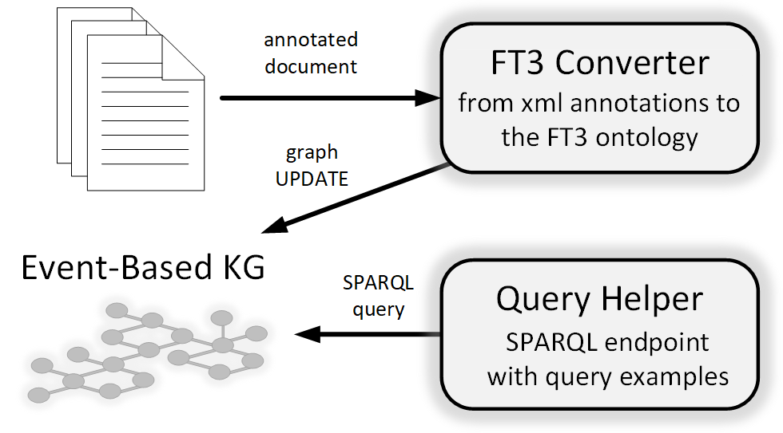

fromTimeToTime
Building an Event-Based Knowledge Graph
fromTimeToTime is a set of contributions that allow transforming a document in annotated with events into a collection of events represented in RDF supported by an ontology.
First, a conversion service permits translating time-related information from narrative texts from/to different formats (such as EventsMatter or TimeML).
This information can be represented as RDF using the fromTimeToTime ontology (ft3:) built.
With these resources, an Event-Based Knowledge Graph can be built. In fact, we have built LegalWhen, an EBKG of European legal decisions that demonstrates the usability of the resources presented. Additionally, a set of predefined queries facilities retrieving information from this legal knowledge graph.
The figure below illustrates the interaction of the different resources.

Contributions
CONVERSION SERVICE
The fromTimeToTime conversion service is a tool that transforms the temporal expressions or events from a text into linked data representation.
This conversion service uses the FromTimeToTime ontology, explained below.
Go to the service

ONTOLOGY
The fromTimeToTime ontology allows to represent different annotation standards related to time in the form of linked data, such as TimeML annotation standard or the one used in the EventsMatter corpus.
This conversion can be done using the related service above.
Go to the ontology

QUERY THE KNOWLEDGE GRAPH
Service to query the legal event-based knowledge graph via a SPARQL endpoint. Some example queries are included in order to facilitate the interaction with the knowledge graph.
Go to the service